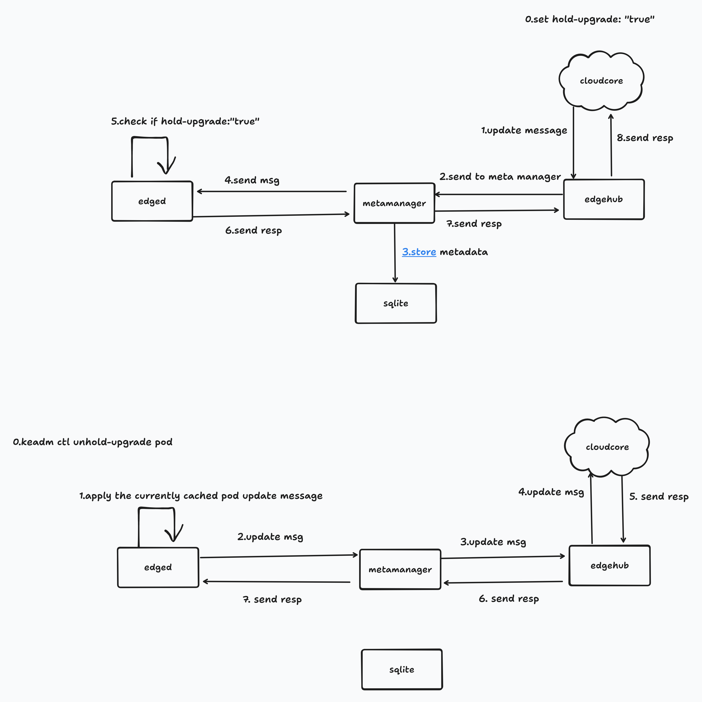

갑작스러운 재시작의 문제
이런 현장에서는 프로그램의 계획되지 않은 재시작이 동작 중단, 안전 사고, 충돌로 이어질 수 있습니다. 발표는 이를 안전 필수(safety-critical) 환경의 문제로 설명합니다.
움직이는 드론이나 로봇의 프로그램이 갑자기 다시 시작되면 어떻게 될까요? 현장 기기가 안전한 상태가 될 때까지 업데이트를 기다리게 하는 방법을, 기초 개념부터 설명합니다.
비행 중인 드론이나 움직이는 로봇의 프로그램이 갑자기 다시 시작되면 사고로 이어질 수 있습니다. 이 발표는 새 프로그램의 실행을 잠시 보류하는 기능을 소개합니다. 현장 기기 쪽에서 착륙·주차·유휴처럼 안전한 상태인지 판단합니다. 안전하다고 판단한 뒤 보류를 풀면 업데이트를 이어갑니다.
비유하자면, 움직이는 차의 제어 프로그램을 바꾸려고 잠깐 껐다 켜는 상황과 비슷합니다. 새 프로그램이 준비됐다는 이유만으로 지금 다시 시작해도 되는 것은 아닙니다.
발표가 다루는 현장은 비행 중인 드론, 자율 로봇, 그리고 AGV / AMR입니다. AGV와 AMR은 공장이나 물류창고에서 스스로 짐을 나르는 무인 운반차입니다. AGV는 정해진 경로를 따라가고, AMR은 스스로 경로를 찾습니다.
이런 현장에서는 프로그램의 계획되지 않은 재시작이 동작 중단, 안전 사고, 충돌로 이어질 수 있습니다. 발표는 이를 안전 필수(safety-critical) 환경의 문제로 설명합니다.
착륙 완료, 주차 완료, 유휴처럼 기기가 안전한 상태인지 명시적으로 확인한 뒤에야 새 버전으로 바꿔야 하는 애플리케이션이 있습니다.
먼저 프로그램을 담는 “상자”와 그 상자를 관리하는 시스템을 생각하면 이해하기 쉽습니다.
컨테이너(Container)는 프로그램과 실행에 필요한 것들을 한 상자에 담은 실행 단위입니다. 어느 컴퓨터에서든 똑같이 실행되게 만듭니다.
Pod(파드)는 컨테이너 한 개 또는 몇 개를 묶은 가장 작은 실행 단위입니다. 노드(Node)는 이 Pod을 실제로 실행하는 컴퓨터 한 대입니다.
쿠버네티스(Kubernetes, 줄여서 K8s)는 컨테이너를 여러 컴퓨터에 나눠 띄우고, 죽으면 다시 살리고, 새 버전으로 바꾸는 일을 자동으로 하는 관리 시스템입니다.
쿠버네티스는 Pod 단위로 띄우고 내립니다. Pod 교체, 즉 롤링 업데이트는 기존 Pod을 지우고 새 Pod을 만드는 방식이므로, 업데이트에는 재시작이 따릅니다.
엣지 컴퓨팅(Edge Computing)은 데이터센터 대신 드론·로봇·공장 설비 같은 현장 기기 가까이에서 계산을 처리하는 방식입니다. KubeEdge는 쿠버네티스를 이 현장 기기까지 확장하는 오픈소스 프로젝트입니다. 클라우드에 있는 쿠버네티스가 현장 기기 위의 컨테이너까지 관리하게 해 줍니다.
KubeEdge는 CNCF(Cloud Native Computing Foundation) 소속입니다. CNCF는 쿠버네티스를 비롯한 클라우드 네이티브 오픈소스 프로젝트를 관리하는 재단입니다.
발표는 기존 쿠버네티스가 “업데이트는 언제든 일어나도 된다”고 전제한다는 점을 짚습니다. 현장 기기에는 그 실행 시점을 기다리게 하는 장치가 필요합니다.
원본 슬라이드 5장을 이 자리에서 넘겨볼 수 있습니다. 영어 슬라이드 아래에 한국어 설명을 붙였습니다.
새 프로그램에 “지금은 실행하지 말고 기다려 주세요”라는 메모를 붙이는 방식입니다. 발표에서 소개한 이름은 Edge Resource Upgrade Control(엣지 리소스 업그레이드 제어)이며, KubeEdge v1.22.0의 신규 기능입니다.
애노테이션(Annotation)은 쿠버네티스가 관리하는 리소스에 붙이는 이름표 겸 메모입니다. 키: 값 형태로 적으며, 프로그램이 이 메모를 읽어 동작을 바꿀 수 있습니다.
HeldUpgrade로 보류 상태를 클라우드에 보고합니다.애노테이션을 붙일 수 있는 대상은 Pod과 Deployment / StatefulSet / DaemonSet입니다. 이 세 가지는 “이 앱을 이런 버전으로 이만큼 띄워 둬라”를 적어 두는 설정 묶음입니다. Deployment는 일반적인 앱, StatefulSet은 각 복제본에 고유한 정체성이 필요한 앱, DaemonSet은 모든 노드마다 하나씩 띄우는 앱에 씁니다.
예시: 애노테이션이 붙는 자리만 보여 주는 최소 설정
metadata:
annotations:
edge.kubeedge.io/hold-upgrade: "true"metadata: 아래의 annotations:가 메모를 적는 자리입니다. 마지막 줄은 “업데이트를 보류하라”는 메모를 "true"로 켭니다. 이 예시는 애노테이션 위치만 보여 주며, 발표 자료에는 설정 전문이 없습니다.
keadm은 KubeEdge를 설치하고 조작하는 명령줄 도구입니다. 현장 기기 쪽 로직이 안전하다고 판단하면 다음 명령으로 보류를 해제합니다.
keadm ctl unhold-upgrade pod <pod-name>이 줄은 특정 Pod의 보류를 풉니다. <pod-name> 자리에 해제할 Pod의 이름을 넣습니다.
keadm ctl unhold-upgrade node이 줄은 노드 전체의 보류를 풉니다. 즉, 해당 현장 컴퓨터 전체를 대상으로 합니다.
클라우드는 업데이트를 현장에 전달하고, 현장은 실행을 기다리게 합니다. 메시지가 어느 담당자를 거치는지부터 보면 아래 그림을 읽기 쉽습니다.
CloudCore는 클라우드 쪽 구성 요소로, 쿠버네티스의 명령을 엣지 노드에 내려보냅니다. 사용자가 설정에 보류 애노테이션을 붙여도 업데이트는 평소처럼 CloudCore를 거쳐 현장에 도착합니다.
EdgeHub는 현장에서 CloudCore와 통신하는 창구입니다. MetaManager는 현장 내부의 메시지와 메타데이터를 관리합니다. 발표 자료는 MetaManager가 edged에 도달하기 전에 업데이트 메시지를 가로채 처리한다고 설명합니다.
앞서 본 edged는 실제 실행을 담당합니다. sqlite는 현장 노드의 메타데이터를 저장하는 가벼운 파일 기반 데이터베이스입니다. 런타임(Runtime)은 컨테이너를 실제로 실행하는 하위 프로그램입니다.
새 버전으로 바꾸는 과정은 기존 Pod을 대체할 새 Pod을 만드는 형태입니다. 보류 조건을 충족하면 업데이트를 메모리의 heldPodUpdates에 저장합니다. 런타임에는 전달하지 않으므로, 명시적으로 보류를 풀기 전까지 새 Pod은 실행되지 않습니다.
해제 메시지를 받으면 해당 Pod에 대해 모아 둔 모든 업데이트를 rawUpdateChan이라는 경로로 런타임에 다시 보냅니다. 그러면 Pod 업그레이드가 정상적으로 이어집니다.
그림은 구성 요소 이름을 cloudcore, edgehub, metamanager처럼 소문자로 표기합니다. 상단은 보류, 하단은 해제 순서입니다.

아래는 그림의 화살표를 글로 옮긴 순서입니다. 화살표 앞은 보내는 쪽, 뒤는 받는 쪽입니다. 단계 번호는 원본처럼 0부터 시작합니다.
발표 자료의 구조 설명은 MetaManager의 메시지 처리를 설명하고, 그림은 edged의 보류 조건 확인을 보여 줍니다. 아래 목록은 그림에 적힌 순서를 따릅니다.
hold-upgrade: "true"를 설정해 보류를 요청합니다.hold-upgrade: "true" 여부를 확인합니다.keadm ctl unhold-upgrade pod <pod-name>를 실행해 지정한 Pod의 보류를 풉니다.낯선 말이 나오면 여기에서 다시 확인하세요. 이 문서에 나온 용어를 모았습니다.
| 용어 | 뜻 |
|---|---|
| 컨테이너(Container) | 프로그램과 그 프로그램이 돌아가는 데 필요한 것들을 한 상자에 담아, 어느 컴퓨터에서든 똑같이 실행되게 만든 실행 단위. |
| 쿠버네티스(Kubernetes, 줄여서 K8s) | 수많은 컨테이너를 여러 대의 컴퓨터에 나눠 띄우고, 죽으면 다시 살리고, 새 버전으로 갈아 끼우는 일을 자동으로 해 주는 관리 시스템. |
| Pod(파드) | 쿠버네티스가 다루는 가장 작은 실행 단위. 컨테이너 한 개 또는 몇 개를 묶은 것. 쿠버네티스는 Pod 단위로 띄우고 내린다. |
| 노드(Node) | 실제로 Pod을 실행하는 컴퓨터 한 대. |
| Deployment / StatefulSet / DaemonSet | "이 앱을 이런 버전으로 이만큼 띄워 둬라"를 적어 두는 설정 묶음. 종류에 따라 쓰임이 다르다. Deployment는 일반적인 앱, StatefulSet은 각 복제본이 고유한 정체성을 가져야 하는 앱, DaemonSet은 모든 노드마다 한 개씩 띄우는 앱에 쓴다. |
| 애노테이션(Annotation) | 쿠버네티스 리소스에 붙이는 이름표 겸 메모. 키: 값 형태이고, 프로그램이 읽어서 동작을 바꾸는 데 쓸 수 있다. |
| 롤링 업데이트 / Pod 교체 | 쿠버네티스에서 앱을 새 버전으로 바꾸는 방식은 "기존 Pod을 지우고 새 Pod을 만드는 것"이다. 즉 업데이트 = 재시작. |
| pending(대기) 상태 | Pod이 만들어졌지만 아직 실제로 실행되지 않고 기다리는 상태. |
| PodCondition | Pod의 현재 상태를 알려 주는 항목. 쿠버네티스가 상태를 보고할 때 쓰는 칸이라고 보면 된다. |
| 엣지 컴퓨팅(Edge Computing) | 데이터센터가 아니라 현장 기기(드론, 로봇, 공장 설비) 가까이에서 계산을 처리하는 방식. |
| KubeEdge | 쿠버네티스를 엣지 기기까지 확장해 주는 오픈소스 프로젝트. CNCF 소속. 클라우드에 있는 쿠버네티스가 현장 기기 위의 컨테이너까지 관리할 수 있게 해 준다. |
| CNCF(Cloud Native Computing Foundation) | 쿠버네티스를 비롯한 클라우드 네이티브 오픈소스 프로젝트를 관리하는 재단. |
| AGV / AMR | 공장이나 물류창고에서 스스로 움직이며 짐을 나르는 무인 운반차. AGV는 정해진 경로를 따라가는 방식, AMR은 스스로 경로를 찾는 방식. |
| CloudCore | KubeEdge에서 클라우드 쪽에 있는 구성 요소. 쿠버네티스의 명령을 엣지 노드로 내려보낸다. |
| EdgeHub | 엣지 노드 쪽에서 CloudCore와 통신을 담당하는 창구. |
| MetaManager | 엣지 노드 안에서 오가는 메시지와 메타데이터를 관리하는 모듈. 이번 기능의 핵심 역할을 맡는다. |
| edged | 엣지 노드에서 실제로 컨테이너를 띄우고 내리는 실행 담당 모듈. 쿠버네티스의 kubelet에 해당하는 역할이다. |
| sqlite | 엣지 노드가 메타데이터를 저장해 두는 가벼운 파일 기반 데이터베이스. |
| 런타임(Runtime) | 컨테이너를 실제로 실행하는 하위 프로그램. |
| keadm | KubeEdge를 설치하고 조작할 때 쓰는 명령줄 도구. |
| Lightning Talk(라이트닝 토크) | 5분 안팎으로 짧게 진행하는 발표 형식. |
| Proposal / PR | 오픈소스 프로젝트에서 "이런 기능을 이렇게 만들자"고 제안하는 설계 문서가 Proposal, 실제 코드 변경을 올리는 것이 PR(Pull Request)이다. |
| 제목 | ⚡Edge Resource Control in KubeEdge: Safely Holding and Releasing Pod Updates for Critical Edge Device |
|---|---|
| 발표자 | Feng Gao · Software Engineer, Sony China / Sony Shanghai China |
| 행사 | KubeCon + CloudNativeCon + OpenInfra Summit + PyTorch Conference China 2026, Shanghai |
| 일시 | 2026-09-08 16:22 ~ 16:27 · 5분 · China Standard Time |
| 장소 | 7F, Pearl Hall |
| 형식 | ⚡Lightning Talk(라이트닝 토크: 5분 안팎의 짧은 발표) · 영어 · Intermediate(중급) |
| 발표 자료 | 세션 페이지 · 슬라이드 다운로드 (PPTX) |
Proposal은 “이 기능을 이렇게 만들자”는 설계 제안입니다. PR(Pull Request)은 실제 코드 변경을 올리는 것입니다. 발표는 아래 두 링크를 소개합니다.
엣지에서 리소스 업데이트를 제어하는 설계 제안입니다.
리소스 업데이트의 보류·해제 기능에 관한 코드 변경입니다. 제목은 발표 자료의 축약 표기를 유지했습니다.
Sony China / Sony Shanghai China 소속이며, KubeEdge에 활발히 기여하는 개발자입니다.
연락처: FG.Gao@sony.com